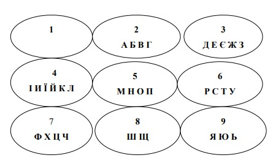
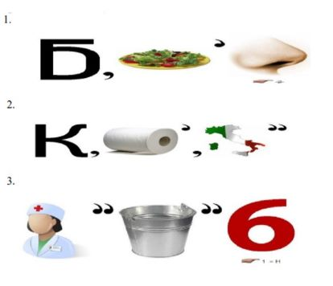

Тема заняття: Кредитування підприємств. Оцінювання фінансового стану підприємств. Фінансове планування на підприємствах.
Мета: систематизувати, поглибити та закріпити знання, отримані протягом вивчення розділів тем «Кредитування підприємств», «Фінансове забезпечення відтворення основних фондів підприємства», «Оцінювання фінансового стану підприємств», «Фінансове планування на підприємствах»
Питання семінарського заняття:
1. Розкрийте сутність та необхідність кредитування підприємств.
2. Охарактеризуйте етапи планування потреби в кредиті.
3. За якими класифікаційними ознаками можна класифікувати кредити, які надаються підприємствам?
4. Охарактеризуйте функції кредиту. Назвіть переваги та недоліки кожної.
5. Розкрийте принципи кредитування підприємства.
6. Поясніть суть та принципи банківського кредитування підприємств.
7. Назвіть основні етапи банківського кредитування.
8. Розкрийте сутність поняття «фінансовий стан підприємства».
9. Опишіть інформаційне забезпечення аналізу й оцінки фінансового стану підприємства.
10. Хто є користувачами результатів оцінки фінансового стану підприємства?
11. Охарактеризуйте ознаки фінансової стійкості підприємства.
12. Наведіть показники оцінки фінансового стану.
13. Які показники характеризують майновий стан підприємства?
14. Яка методика розрахунку показників оцінки ліквідності та платоспроможності?
15. Розкрийте порядок розрахунку показників фінансової стійкості та стабільності підприємства.
16. Наведіть основні симптоми фінансової кризи.
17. Дайте визначення санації підприємства.
18. Визначте мету фінансової санації, охарактеризуйте її основні види.
19. Назвіть випадки, коли підприємству потрібно проводити санацію.
20. Охарактеризуйте джерела санації.
21. Дайте визначення поняття «банкрутство», розкрийте види банкрутства.
22. Сформулюйте основні підстави для порушення справи про банкрутство підприємства-боржника.
23. Назвіть черговість задоволення умов кредиторів згідно з чинним законодавством України.
24. Сформулюйте основні обов’язки арбітражного керуючого (розпорядника майном, керуючого санацією, ліквідатора) при порушенні справи про банкрутство.
25. Розкрийте сутність фінансового планування.
26. Перелічіть основні принципи та завдання фінансового планування.
27. З’ясуйте методи фінансового планування.
28. Опишіть основні розділи фінансового плану підприємства.
29. Бізнес-план, поняття, мета складання, розділи.
30. Етапи розробки бізнес-плану.
Рекомендована література:
1. Аранчій В.І. Фінанси підприємства: навчальний посібник / В.І. Аранчій, В.Д. Чумак, Л.В. Бражник. – Полтава: РВ ПДАА, 2018. – 350 с.
2. Бердар М. М. Фінанси підприємств: навчальний посібник / М.М. Бердар. – К.: Центр учбової літератури, 2010. - 352 с.
3. Бедринець М. Д., Довгань Л.П. Фінанси підприємств: навчальний посібник . – К.: Центр учбової літератури, 2018. – 292 с.
4. Непочатенко О. О. Фінанси підприємств: підручник / О.О.Непочатенко, Н.Ю. Мельничук. – К.: Центр учбової літератури, 2019. – 504 с.
5. Фінанси підприємств: навч. посібник / За ред. Г. Я. Аніловської, І. Б. Висоцької. Львів: ЛьвДУВС, 2018. 440 с.
Приклади тестових завдань:
1. Комерційний кредит - це економічні відносини, які виникають між:
а) підприємствами;
б) комерційними банками і підприємствами;
в) державою та комерційними банками;
г) державою та підприємствами;
2. Кредитна лінія - це:
а) угода, за якою банк зобов'язується надати позичальнику кредити на раніше узгоджену суму протягом певного періоду;
б) згода, але не зобов'язання комерційного банку надати кредит позичальнику;
в) межа, яка встановлює максимальні й мінімальні розміри та терміни видачі кредиту одному позичальнику;
г) ліміти видачі кредитів.
3. Основною метою фінансової санації є:
а) покриття поточних збитків та усунення причин їхнього виникнення;
б) мобілізація фінансових ресурсів для проведення санаційних заходів;
в) задоволення вимог кредиторів;
г) виконання зобов'язань перед бюджетом.
4. Що таке фінансове планування?
а) баланс грошових коштів;
б) баланс доходів і видатків;
в) розрахунок потреби у фінансових ресурсах у плановому періоді;
г) розробка планів фінансового забезпечення загального розвитку підприємства на п'ять років.
5. Підставою про порушення справи про банкрутство підприємства може бути:
а) письмова заява будь-кого з кредиторів боржника;
б) якщо надані кредити не забезпечені заставою;
в) письмова заява потенційного санатора;
г) невизнання боржником претензії про відшкодування заборгованості.
Завдання І. Фінансова гра: «Дешифрувальник».
За допомогою поданих цифр та інформаційних даних відгадайте словосполучення:
1) 6538463559; 2) 55623540652564; 3) 75535546644669; 4) 63562234954669; 5)7434754403556; 6) 25566432749; 7) 5642664525664; 8) 44424355664; 9)52646252622559025626; 10) 52565655664; 11) 745256525250223349.
Циферблат для розгадування слів по системі дешифрувальник:
Завдання ІІ. Розгадай ребус:
Завдання ІІІ. Кросворд:
4. Частина виробничих основних засобів, яка забезпечує умови здійснення виробничого процесу.
5. Вид основних засобів, який охоплює будинки і споруди, передавальні пристрої, виробничий і господарський інвентар та інші основні засоби.
8. Вид зносу, який проявляється у постійній втраті техніко-економічних властивостей і, отже, втраті споживчої вартості, яка у міру використання необоротних активів переноситься на готовий продукт.
10. …. знос − це передчасне, до закінчення нормативного терміну фізичного зносу, відставання основних засобів, інших необоротних матеріальних і нематеріальних активів унаслідок створення нових, більш прогресивних і економічно ефективних у експлуатації активів.
11. Коефіцієнт стану основних засобів, який показує, яка частка основних фондів, наявних на початок звітного періоду, вибула за цей період унаслідок старіння та зносу.
13. Показник забезпечення підприємства основними засобами, який показує, скільки основних засобів припадає на 1 гривню чистого доходу підприємства.
14. Метод нарахування амортизації, який розраховується діленням вартості основних засобів, які амортизуються на термін корисного використання основних засобів.
15. Вартість відтворення основних засобів за сучасних умов виробництва.
По вертикалі 2. … вартість – сума коштів, яку підприємство очікує отримати від реалізації основних засобів після закінчення терміну їх корисного використання.
3. Метод нарахування амортизації, перевагою якого є зручність застосування для визначення амортизації автотранспорту залежно від його пробігу, верстатів та будь-якого виробничого обладнання.
6. Процес поступового перенесення вартості основних засобів на продукт, який виготовляється з їх допомогою.
7. Вид основних засобів.
9. Це історична або фактична собівартість основних засобів у грошовому вираженні сплачена або витрачена для їхнього придбання чи створення.
12. Показник забезпечення підприємства основними засобами, який показує, скільки основних засобів припадає на 1 працівника підприємства.
Завдання ІV. Розв’язати задачі:
Задача 1. Вартість закупленого обладнання становить 100 тис. грн, термін корисної експлуатації − 8 років, ліквідаційна вартість − 10 тис. грн. Визначити річну суму амортизації за кожний рік методом зменшення залишкової вартості її нарахування.
Задача 2. Проаналізувати показники ліквідності ПАТ «Чернівецька меблева фабрика» за даними таблиці.
| Показники | Попередній період | Звітний період |
|---|---|---|
| Оборотні активи – всього, в тому числі: | 1196 | 1273 |
| грошові кошти та їх еквіваленти | 5 | 10 |
| запаси | 875 | 799 |
| дебіторська заборгованість за товари, роботи, послуги | 190 | 260 |
| товари | 126 | 204 |
| Поточні зобов’язання | 1210 | 1315 |
Зробити висновки за результатами аналізу.
Задача 3. Підприємство отримало кредит у розмірі 100 тис. грн з 1 лютого поточного року терміном на 5 місяців під 60 % річних. З 1 квітня поточного року процентна ставка знизилася на 15 %, а від 15 травня процентна ставка становить 40 %. У кредитному договорі передбачається щомісячне погашення кредиту рівними частинами. Визначити суму коштів, яка буде повернена підприємством комерційному банку після закінченню терміну користування кредитом.